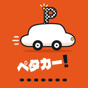

ペタカー!プライバシーポリシー
ペタカー!（以下「本アプリ」）は、実際に会った人とだけ車のスタンプを交換して記録するアプリです。本アプリが扱う情報と、その使い方を説明します。
1. 集める情報
- ログイン情報：Google または Apple のアカウントの識別子とメールアドレス。ログインと本人の確認にだけ使い、ほかの利用者には表示しません。
- プロフィール：表示名、都道府県、ガレージに登録した車種、スタンプとプロフィール背景の写真、ひとこと、SNSリンク（登録した場合）。
- 記録：交換の記録（相手・日時・交換した場所のスポット名・その日の車）、スポットの記録、バッジ、設定。
- 通報：通報した内容と、通報した人・された人の識別子。
2. 位置情報の使い方
- 交換するとき：2人が近くにいるかを判定するため、交換中の2人の間だけで現在地をやり取りします。判定が終わると約10秒後に消し、記録には近くのスポット名（「〇〇付近」）だけを残します。
- 交換モード中：近くの人を一覧に出すため、約5km四方のおおまかな区画だけを共有します。交換モードを終えると消します。
- スポットの記録・近くのスポットの表示：スマホの中だけで距離を計算し、現在地は送信しません。
- スポットの「いま◯人」：スポットで記録したときに、スポット名と2時間の期限だけを、誰が記録したか分からない形で保存し、そのスポットに今いる人数の表示に使います。
- 走ったルートや、詳しい現在地の履歴は保存しません。
3. ほかの利用者に見えるもの
スタンプ、表示名、その日の車、都道府県、プロフィールの背景、ひとこと、SNSリンク。交換数・リワード・参加したイベント・SNSリンクは、設定で非公開にできます。
4. モーションセンサー
2人で同時にスマホを振ったことを判定するためだけに使います。データは保存しません。
5. 外部のサービス
ログインとデータの保存に Google の Firebase（Google Cloud）を使います。プロフィール・写真・記録は日本（東京）のデータベースに保存します（ログイン情報は Google の認証基盤で管理されます）。広告目的で第三者に提供・販売することはありません。法令に基づく場合を除き、本人の同意なく第三者に提供しません。
6. 保存期間と削除
アカウントがある間は保存します。アプリの「設定」→「アカウントを削除」から、いつでもプロフィール・写真・記録を削除できます。記録が消える事故に備えて、直近7日分のバックアップを本人だけが読める場所に自動で保存しています。アカウントを削除すると、バックアップも一緒に削除されます。削除したあとも、交換した相手の記録には「退会したユーザー」として交換した事実だけが残ります。通報の内容は、対応の記録として最長1年保存したあと削除します。詳しくはアカウントとデータの削除をご覧ください。
7. 子どもの利用
本アプリは13歳未満の方を対象としていません。未成年の方は保護者の同意を得てから利用してください。
8. 変更
このポリシーを変更するときは、アプリ内のお知らせとこのページでお知らせします。
9. お問い合わせ
SERAPHIX（セラフィクス） info@seraphix-jp.com